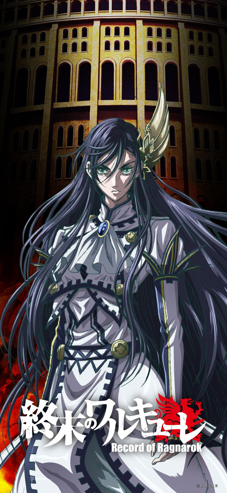
布倫希爾德
本作的女主角，女武神姊妹的長姊，半人半神之身。本作形象是留著黑色長髮、碧綠雙瞳的女子，個性冷靜聰慧且剛直，但有時候會作出犀利的發言，情緒激動時會出現誇張的顏藝表現。
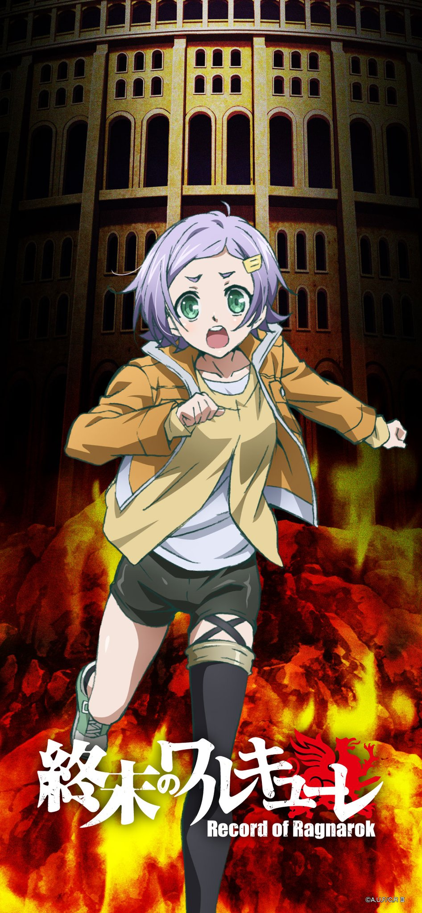
格蕾
見習女武神，為女武神姊妹的末妹。外型是留著淺紫色短髮，身著便衣的少女。經常跟著布倫希爾德行動，有時候會吐槽人類方代表鬥士的出格行為。
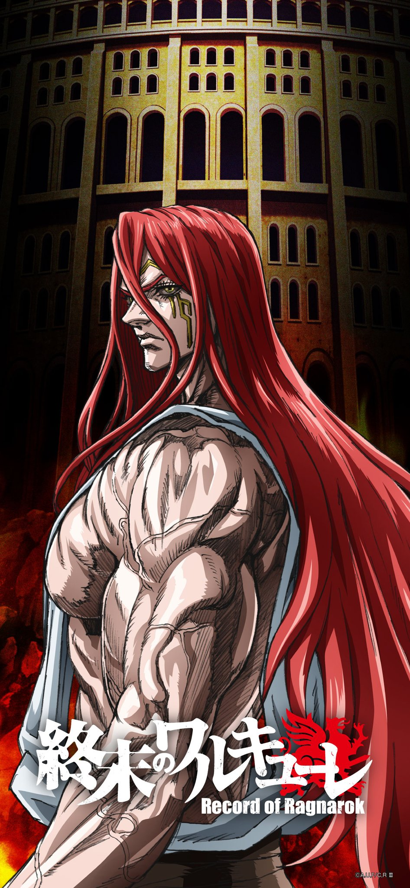
索爾
北歐神話的雷神，奧丁的兒子，被譽為「雷之狂戰士」，在本作形象是蓄著紅色長髮的男子，持有武器為雷神之錘。作為諸神黃昏第一回合戰神明一方的鬥士，在第一回合對抗呂布，最終使用覺醒的雷神之槌擊殺呂布並獲得勝利。
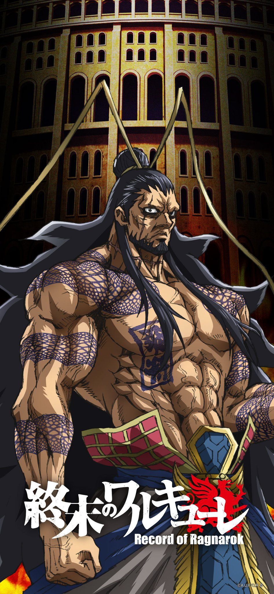
呂布
三國時代的名將，被譽為「中華最強的武將」，更是被布倫希爾德讚譽為在戰場上遇到的「最兇最狂的戰士」。作為諸神黃昏第一回合戰人類一方的鬥士，在第一回合對抗索爾，雖然曾用武器一度傷害了雷神並使其流血，但不敵覺醒的雷神之鎚，被其所擊殺，最後敗北。

蘭蒂格瑞斯
女武神姊妹的四姊，外型是神情溫和且配戴髮簪的長髮女子，個性溫文有禮。隨著呂布的犧牲一同消逝，成為第一位犧牲的女武神。
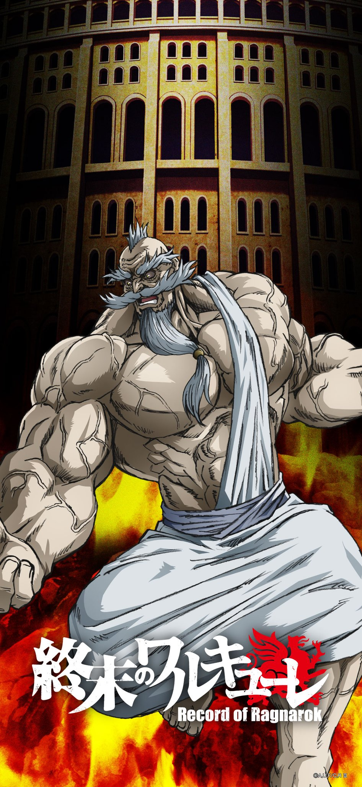
宙斯
希臘神話的諸神之首，「全宇宙之父」，兼任「英靈殿」委員會領導者、「人類存亡會議」主持者，在本作形象是平時體態瘦弱、但在戰鬥時體格會產生變化的長者模樣。在第二回合對抗亞當。最後以阿陀摩須之姿戰勝亞當。
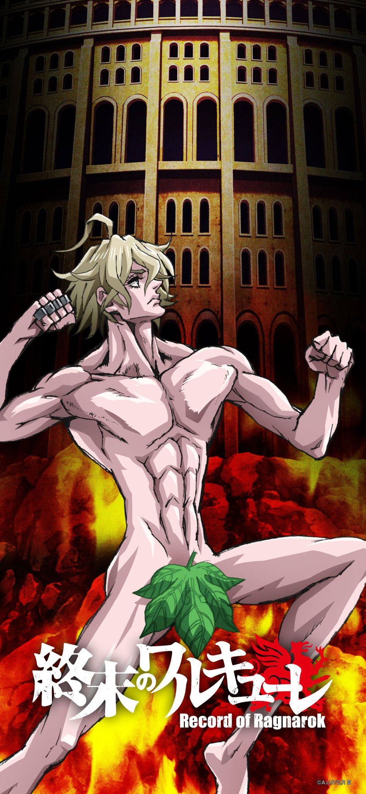
雅當
神創造的第一個人類，被譽為「全人類之父」，人類檔案編號No.00000000001，是最接近神的人。在本作形象是僅用葉子遮掩重要部位的青年。作為諸神黃昏第二回合戰人類一方的鬥士，在第二回合對抗宙斯，雖然起初成功複製對手的所有招式而在戰鬥中佔上風，但其後因身體承受不了多次的能力使用，雙目失明，而在戰鬥中逝去。

瑞吉蕾芙
女武神姊妹的七姊，外型是配戴帽子和眼鏡，身材矮小的短髮女性。最終隨著亞當的犧牲一同消逝，成為第二位犧牲的女武神。
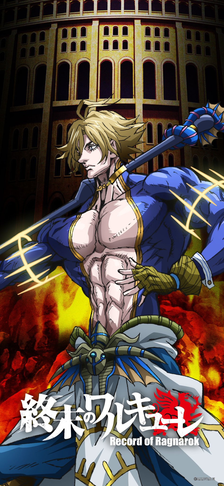
波賽頓
希臘神話的海神，被譽為「大海的暴君」，在本作形象是金髮青年，持有武器為三叉戟，擁有操控水的力量。作為諸神黃昏第三回合戰神明一方的鬥士，在第三回合對抗佐佐木小次郎，後由於大意輕敵露出破綻，被小次郎砍殺。
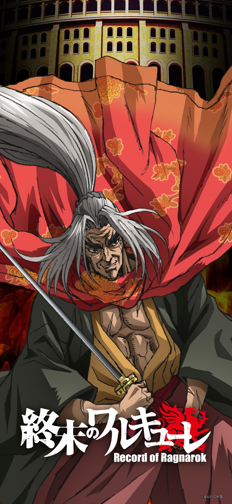
佐佐木小次郎
日本戰國時代的劍客，被譽為「史上最強的敗者」，在本作形象是蓄著銀色長髮的中高齡男子。作為諸神黃昏第三回合戰人類一方的鬥士，在第三回合對抗波賽頓，儘管一直被對手攻擊壓制，甚至被破壞與之搭擋的荷瑞絲特化身的刀，但由於荷瑞絲特運用兩種力量的特性轉化成雙刀，得以逆轉戰局，最終使出絕技「千手無雙」透過冥想的力量，在腦海裡模擬戰鬥預測了其動向，作出了防禦和閃避，並利用波賽頓對自己的輕視使出了致命的一擊，將其斬殺，最後勝利。

荷瑞斯特
女武神姊妹的二姊，外型是留著遮掩單邊眼睛的瀏海且梳著髮辮的女性，同時擁有溫和穩重與剛烈激動的雙重人格，唯一名字擁有雙重含意的女武神。在第三回合化身為佐佐木小次郎的雙刀備前長光三尺余寸作戰。
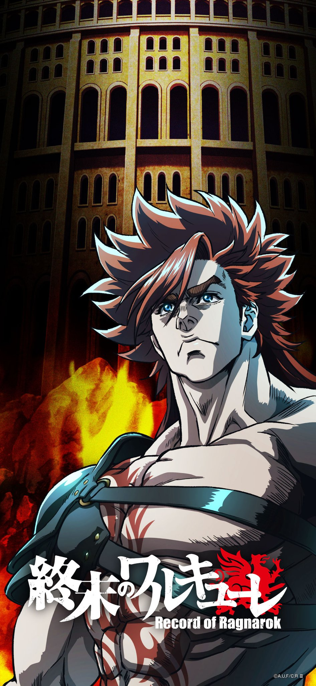
海克力士
希臘神話中半人半神的大力士，被譽為「不屈的鬥神」，在本作形象是身材結實的橙髮青年，持有武器為棍棒。作為諸神黃昏第四回合戰神明一方的鬥士，在第四回合對抗開膛手傑克，最後敗於傑克的計謀，表達自己深愛人類的心聲，將解救人類的願望託付布倫希爾德後便消逝死去。
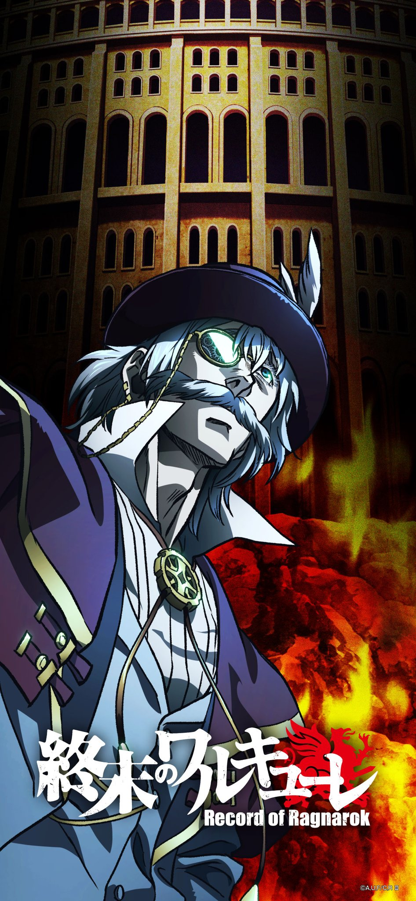
開膛手傑克
19世紀英國倫敦的「霧之殺人鬼」，在本作形象是穿著紳士風格服裝，喜歡紅茶和莎士比亞相關作品的中年男子。作為諸神黃昏第四回合戰人類一方的鬥士，在第四回合對抗海克力士，不但藉著主場優勢進行城市地形戰牽制對手，還利用赫蘿克的能力將接觸到的物體變成神器發動攻勢。

赫蘿克
女武神姊妹的十一姊，外型是穿著蘿莉風格衣裙裝，梳著雙髮辮的矮小女性。在第四回合化身開膛手傑克的手套作戰，賽後感嘆開膛手傑克無法表漏自身悲傷，偕同開膛手傑克待在自己的房間觀賽。

濕婆
印度神話中的主神，被譽為「宇宙的破壞神」，在本作形象是擁有四隻手臂和紫色肌膚的黑髮男子，熱愛跳舞，是樓陀羅的摯友作為諸神黃昏第五回合戰神明一方的鬥士，在第五回合對抗雷電為右衛門，被擊斷三條手臂後，以燃燒生命的代價使出「大切炎舞」擊敗雷電獲得勝利。

雷電為右衛門
被譽為「無與倫比的力士」是史上勝率最高的相撲力士。在本作形象是體態結實，肌肉密度異於常人的男子。作為諸神黃昏第五回合戰人類一方的鬥士，在第五回合對抗濕婆，使用必殺技「鐵砲 八呎鳥」打廢濕婆兩條手臂，期間與濕婆產生強者相惜的情感，最終身負終傷之際，含笑感謝濕婆幫助他找回相撲之道和用盡全力作戰

斯露德
女武神姊妹的三姊，外型是壯碩結實的女性。對雷電為右衛門懷有愛慕之心。隨著雷電為右衛門的犧牲一同消逝，成為第三位犧牲的女武神。
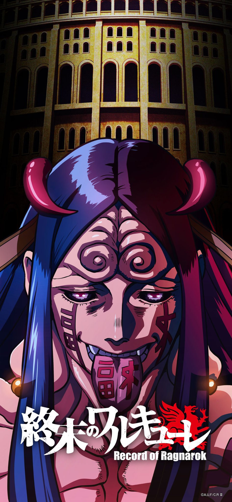
波旬
「第六天魔王」，傳說中曾毀掉大半個冥界的狂戰士。原承受不了自身的力量而崩壞，之後別西卜把其殘渣回收，把殘渣培養成「波旬之種」後，把「波旬之種」種入零福體內而復活。最後被釋迦與被鍊成神器的零福擊倒後消逝。
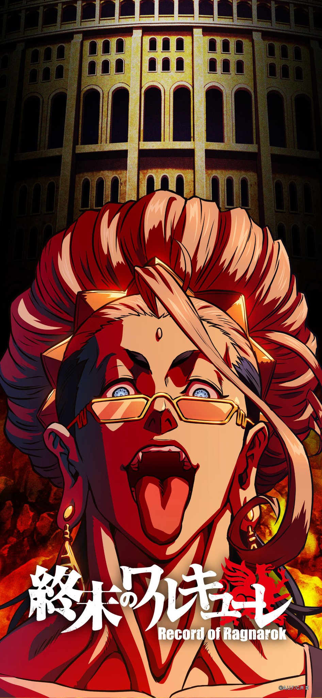
釋迦
佛教的開祖，在本作形象是束著盤髮，自我意識強烈且不受規則拘束，喜歡吃零食的男子，被布倫希爾德評為「史上最強的青春期」。持有神器為可依照釋迦情感變化型態的六道棍。原作為諸神黃昏第六回合戰神明一方的鬥士，但因想要拯救人類，而站在人類一方，在第六回合對抗七福神的集合體——零福，交戰間不但和零福產生友誼，還為了擊敗從零福體內復生的波旬與零福聯手，將零福鍊成神器並成功殲滅波旬，為人類取得勝利。
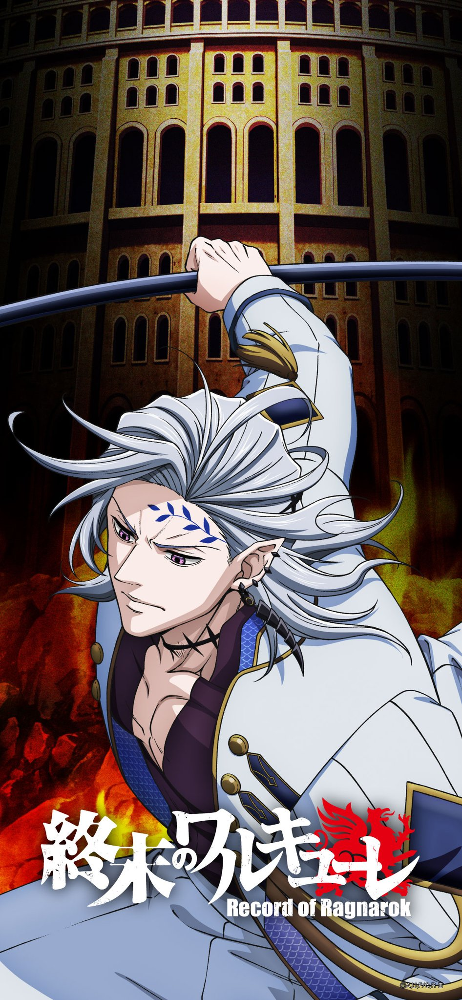
黑帝斯
希臘神話的「冥界之王」，宙斯、波賽頓的大哥。在本作形象是額頭和左臂有樹枝狀紋身的英俊男子。作為諸神黃昏第七回合戰神明一方的鬥士，在第七回合對抗始皇帝，因為與始皇帝同為帝王的身份而互生敬意，雖然在戰鬥中一度佔據優勢，更斬落對方的左臂，但被始皇帝察覺能力弱點施展「承力天鳳」搭配亞爾薇特變化的長劍反擊破解攻勢，最終被始皇帝以「始皇承力燕斬」擊敗。
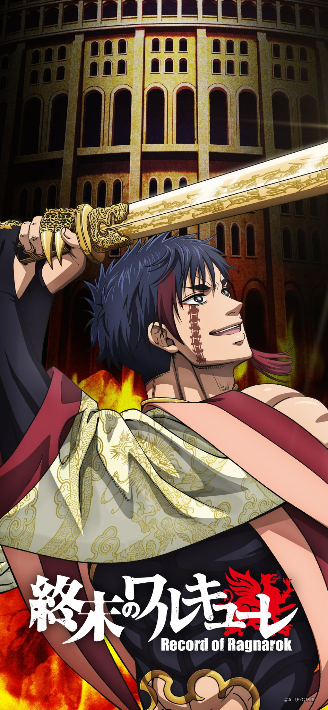
始皇帝
秦國開國君主，被譽為「萬象起始之王」，在本作形象是右頰和背部有蜈蚣狀紋身的青年。作為諸神黃昏第七回合戰人類一方的鬥士，在第七回合對抗冥王黑帝斯，展開一場王與王的對決。因為與對方同為帝王的身份與覺悟而互生敬意，雖然在戰鬥中一度陷入劣勢，並遭黑帝斯斬斷左臂，但運用能力察覺對手的破綻後，施展「承力天鳳」搭配亞爾薇特變化的長劍反擊粉碎了黑帝斯的四血槍，以「始皇承力燕斬」擊敗黑帝斯取得勝利。

亞爾薇特
女武神姊妹的十姊，外型與赫蘿克相似，是穿著蘿莉風格衣裙裝的矮小女性，差別在梳著捲馬尾般的髮型。在第七回合化身始皇帝的神羅鎧袖作戰，賽後與始皇帝接受治療。
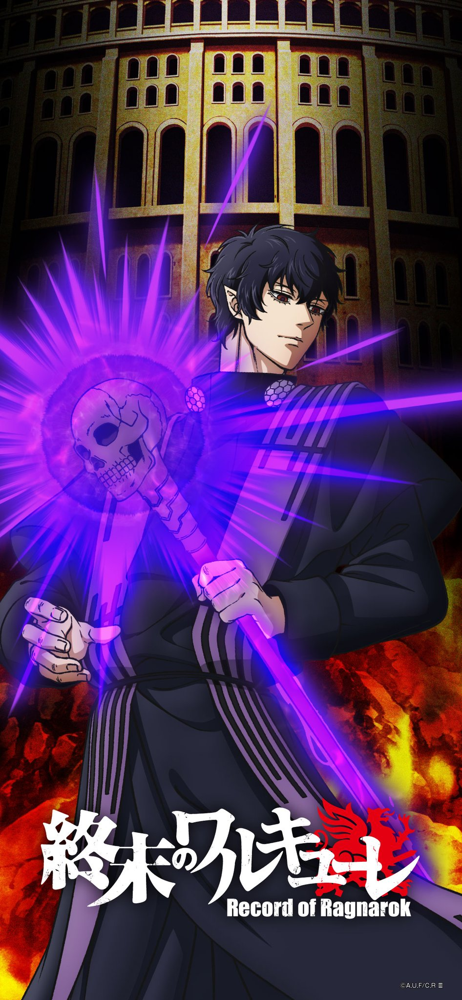
巴力西普
外號「蠅王」，原為非利士人的神祇，但在猶太教和基督教的傳說中變為惡魔。本作形象是外型酷似米津玄師的美青年。作為諸神黃昏第八回合戰神明一方的鬥士，在第八回合對抗特斯拉，最終在身負重傷的狀態將其擊殺。
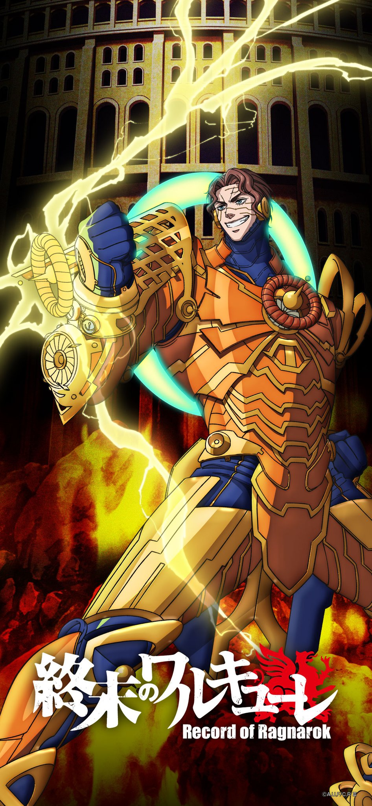
尼可拉斯・特斯拉
天才物理學家兼發明家，被譽為「人類史上唯一的魔法使」。在本作形象是擁有一頭彎曲的短髮，外貌清秀的美男子。作為諸神黃昏第八回合戰人類一方的鬥士，在第八回合對抗別西卜，但不敵別西卜的攻勢，造成格恩達爾化身的機器鎧甲受損嚴重和身受重傷。

格恩達爾
女武神姊妹的九姊。外型是梳著兩條在尾端紮起的長直髮辮，頭戴高帽，體型纖細的女性。隨著特斯拉的犧牲一同消逝，成為第四位犧牲的女武神。
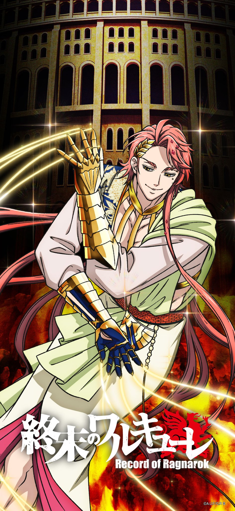
阿波羅
希臘神話的光明之神，本作設定為太陽神，別名「福玻斯」，被譽為「璀璨的福玻斯」，在本作形象是高傲自戀、重視美感的俊美男子。作為諸神黃昏第九回合戰神明一方的鬥士，在第九回合對抗列奧尼達一世，並以自身為箭，揮拳擊中列奧尼達一世獲勝。
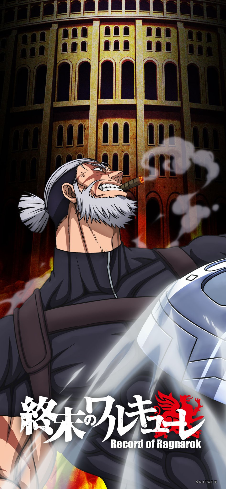
列奧尼達一世
古代斯巴達國王，在本作形象是外型粗曠壯碩，全身遍佈傷疤的男子，被布倫希爾德譽為「人類史上最強的叛逆者」。在第九回合對抗阿波羅，在作戰過程曾一度壓制對方，但後來被阿波羅使出「阿提米絲的月影」連射光箭重創，遭對方揮拳擊中腹部而亡。

潔蘿露爾
女武神姊妹的五姊，外型是配戴髮箍與大型對稱髮飾，神情強勢的長髮女子，個性慓悍且自尊心強。隨著列奧尼達一世的犧牲一同消逝，成為第五位犧牲的女武神。
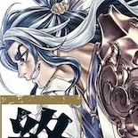
素盞鳴尊
日本神話中為開天闢地之神伊奘諾尊與伊奘冉尊之子、斬殺八岐大蛇的英雄，日本的劍術之神，在《古事記》則稱為須佐之男命。在本作形象是留著濃眉和身穿鎧甲的持劍男子。作為諸神黃昏第十回合神明一方的鬥士，在第十回合對抗沖田總司，被總司連續貫穿腹部三刀加速其崩解而敗亡。
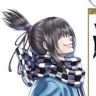
沖田總司
日本幕末時期新選組一番隊組長，在本作形象是綁著短髮辮，配帶武士刀的矮小青年。一旦進入戰鬥狀態便會顯露殺意，擁有被稱作「鬼子」的隱藏精神。
詩嘉茉爾德
女武神姊妹的六姊，外型是梳著單束髮辮的女子。在第十回合化身為沖田總司持有的菊一文字作戰，賽後連同沖田總司獲得伊奘諾尊的治療保住性命。
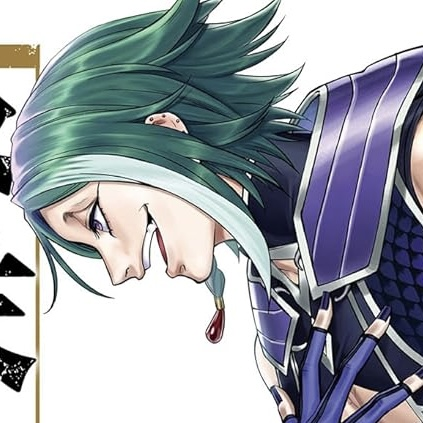
洛基
北歐神話的狡詐之神，在本作形象是綠髮青年，作為諸神黃昏第十一回合神明一放的鬥士，在第十一回合對抗西莫・海赫，被其施展「對神狙擊術•天空之殘光」擊發的子彈貫穿頭部，回憶起對布倫希爾德的愛意含笑而逝。
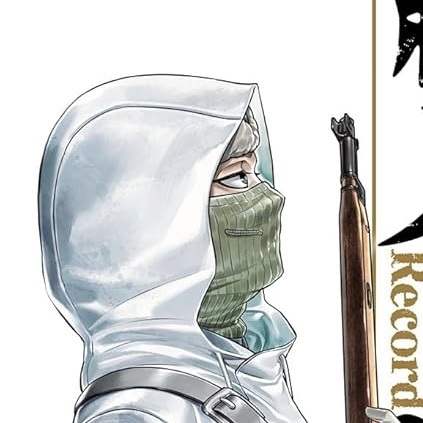
西莫・海赫
外號「白色的死神」，第二次世界大戰期間活躍的芬蘭狙擊手。在本作形象是穿著連帽大衣，佩戴面罩遮掩臉部傷疤的青年，擅使狙擊槍「莫辛-納干步槍」。諸神黃昏第十一回合戰作為人類一方的鬥士，登台迎戰洛基。
拉絲格瑞絲
女武神姊妹的十二姊，外型是將頭髮束起，穿著長裙裝的女性。喜好喝茶和野餐。在第十一回合作為席摩·海赫的搭擋。
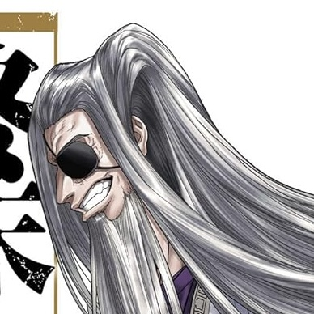
奧丁
北歐神話的最高神，索爾的父親，在本作形象是左眼配戴眼罩，蓄著灰長髮的中年男子，時常透過飼養的烏鴉福金和霧尼代為發表意見。於諸神黃昏第十二回合變身成年輕的戰鬥型態代表神明方迎戰坂田金時。
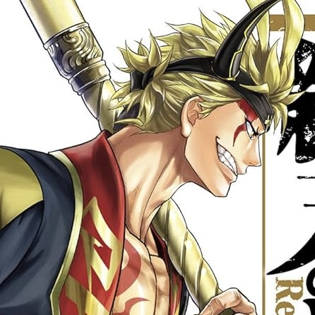
坂田金時
日本民間傳說的英雄，源賴光的家臣之一，在本作形象是右臉有傷疤的青年，武器是巨斧。於諸神黃昏第十二回合戰作為人類代表方鬥士登台迎戰奧丁。